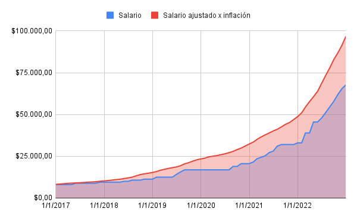

Impuestazo
¿Como calculamos las perdidas contra la inflación?
Primero tomamos la evolución salarial ingresada para el periodo determinado (en este caso el salario minimo). Una vez hecho eso tomamos el primer salario y creamos un salario hipotetico ajustado por inflación para el periodo seleccionado.
Una vez con esos datos procedemos a calcular la diferencia entre ambos (se resta uno con el otro)

Y finalmente, previo a sumar dicha diferencia, se ajustan por inflacion todos los salarios a la ùltima fecha del periodo seleccionado.